My trip started out on June 12, 2016 by a morning flight to San Francisco. The Newark TSA line was actually shorter than expected! After some turbulence on the plane, I promptly arrived to San Francisco in the afternoon. My dad, mom, and I spent some time in the hotel and entered the welcome ceremony. I knew some of the people by name already since the GCI winners talked in a chat previous to the event. I met my FOSSASIA counterpart, Yathannsh Kulshreshtha, and other GCI students from other organizations. We played the Human Scavenger Game to get to know each other. Everyone was surprised to some pleasant gifts after the ceremony including a phone (Nexus 5X). After the ceremony, Yathannsh and I fixed FOSSASIA’s GCI website for Monday’s presentation.
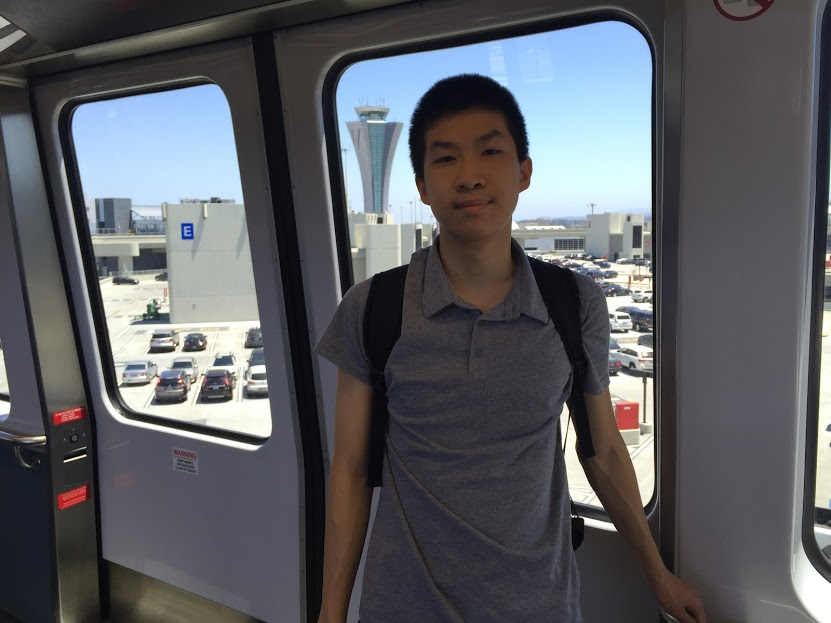 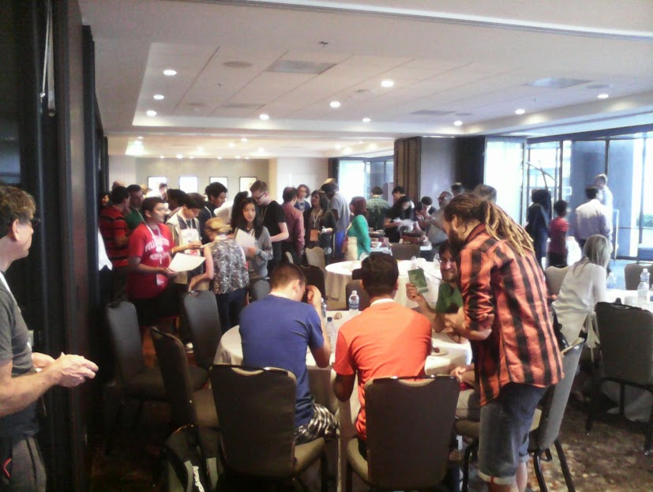 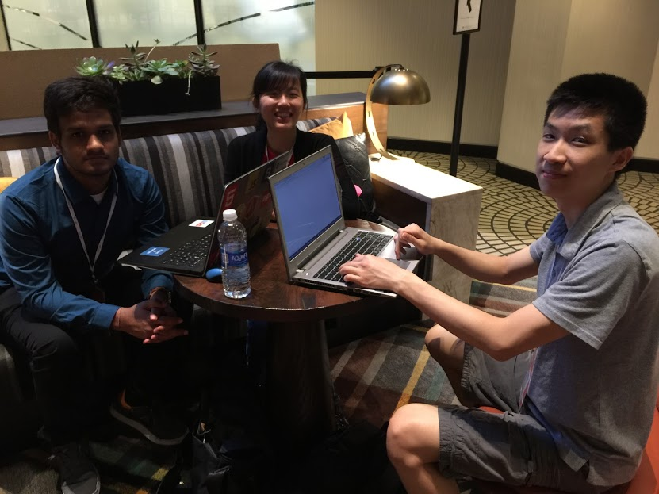
Early Monday morning, GCI winners, parents, and mentors arrived at Google’s headquarters at Mountain View, California. We rode the coach bus around the gigantic campus (basically a small city inside Mountain View) and got off in the engineering building. As I looked around, I saw Google bikes zooming down the roads around the campus and saw a self-driving car in the lane next to us. After receiving awards and giving a short presentation on my activities I performed in FOSSASIA, we ate a full lunch. Googlers are extremely lucky to get such a wide selection of food for free! There were food from many countries including India, Japan, and Italy. In the afternoon, we listened to different captivating presentations: Google Expeditions, Self-Driving Cars, SAMBA, and Chrome OS. Afterwards, we took a bus to Google’s visitor center to look at the history of Google and shop for apparel with the credit they gave us. We were then treated to an appetizing dinner. I dozed off on the way back.
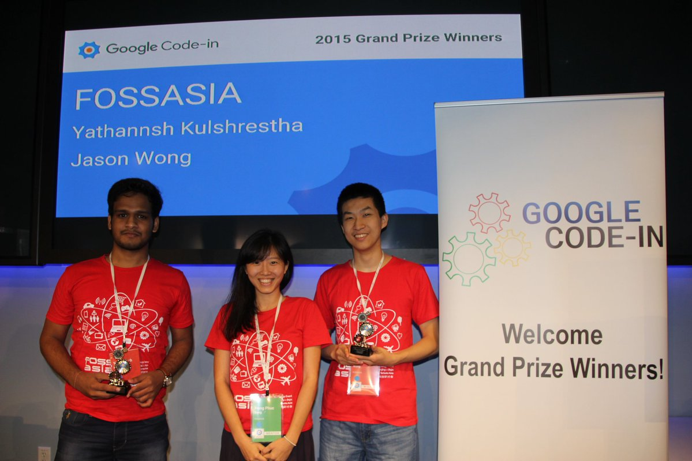 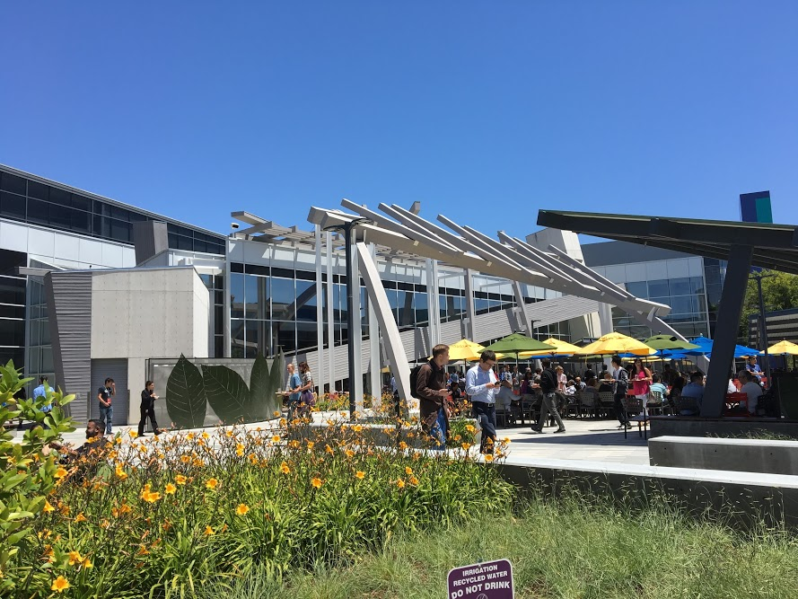 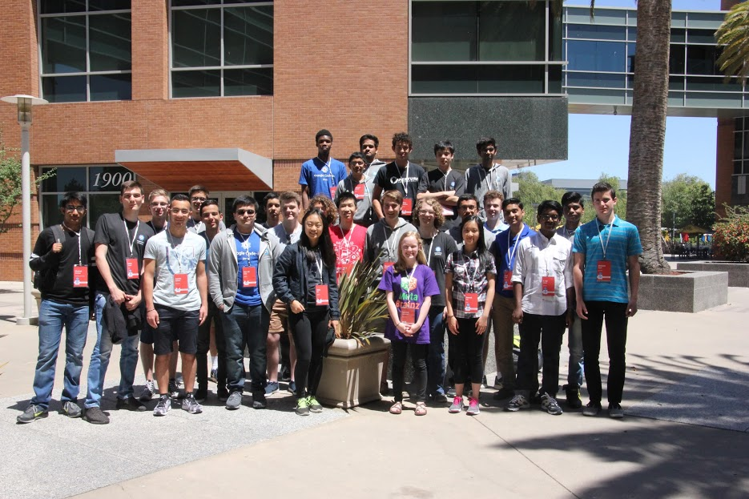
Tuesday was “fun day”. My dad and I along with others in the group had the chance to ride Segways down Fisherman’s Wharf. It was a very exhilarating experience as it was our first times riding them. I thought we were going to ride the Segways down the sidewalk, but instead we rode them on the same roads cars were driving on! During lunch, we went to Ghirardelli’s square for chocolate and ate at a pub. After being completely satisfied (and not finishing my lunch for the first time in ages), we walked the Golden Gate Bridge (3.4 miles roundtrip) in about an hour and fifteen minutes. We ended the day by taking a cruise on a private yacht and were served to a delightful steak and chicken dinner.
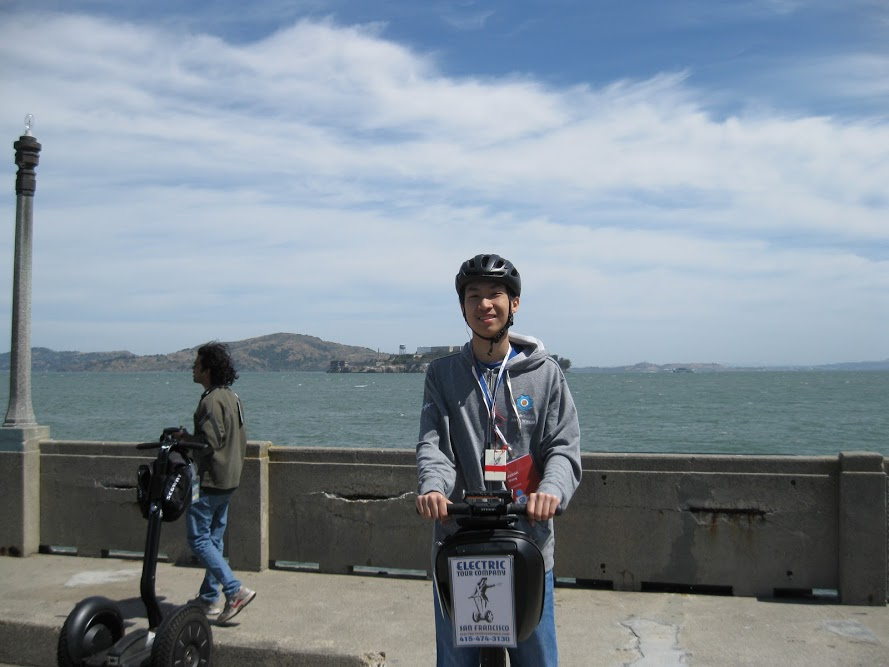 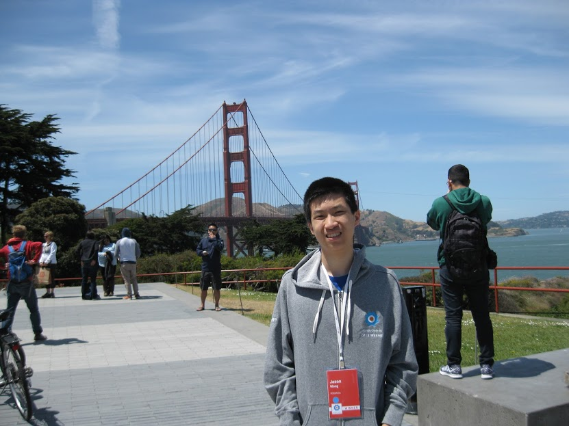 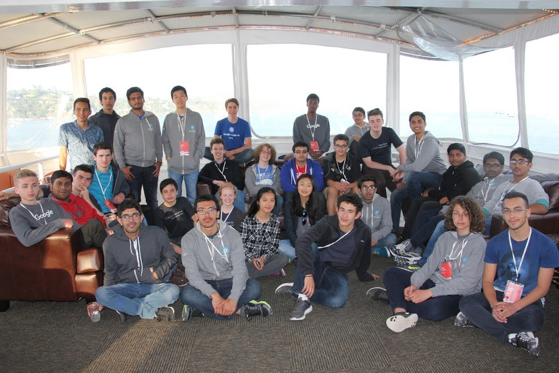
Wednesday was the day of the official Google Code-in trip. Today, the last Googlers spoke about Tensorflow (machine learning), Google Cloud Platform, Google Fi, and Science Journal in the San Francisco office. The San Francisco office was much more plain than Googleplex; on the outside, one could not even tell that part of the building is a Google office. I don’t feel too well today because I ate too many potato chips at the pub yesterday. I had a chance to meet Jen the Magnet alumni and talked to her about her career progression after Magnet and Columbia. The most painful part has now arrived: departing from the mentors and other GCI students. I said my goodbyes to my mentor Hong Phuc Dang, Stephanie, and other students. This was one of my favorite trips I have ever been on and will miss it.
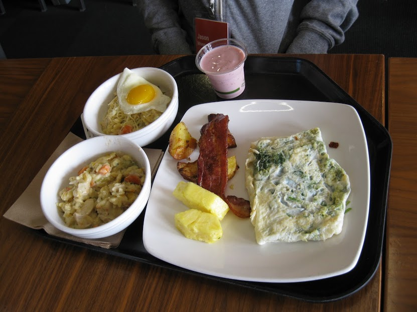 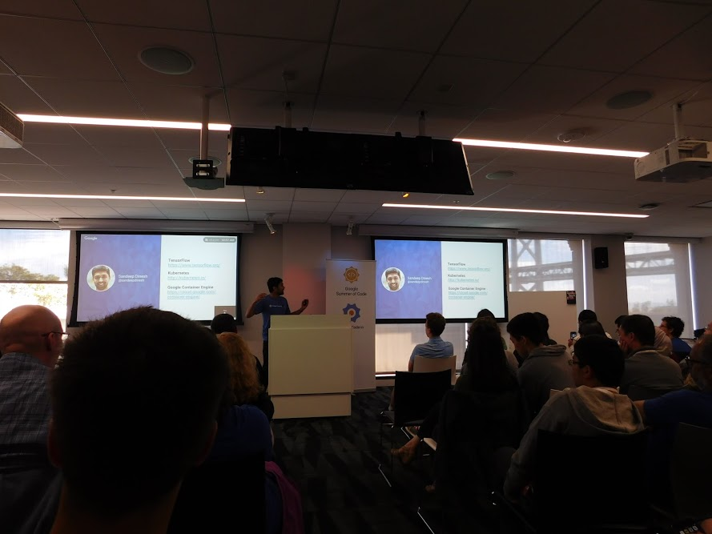 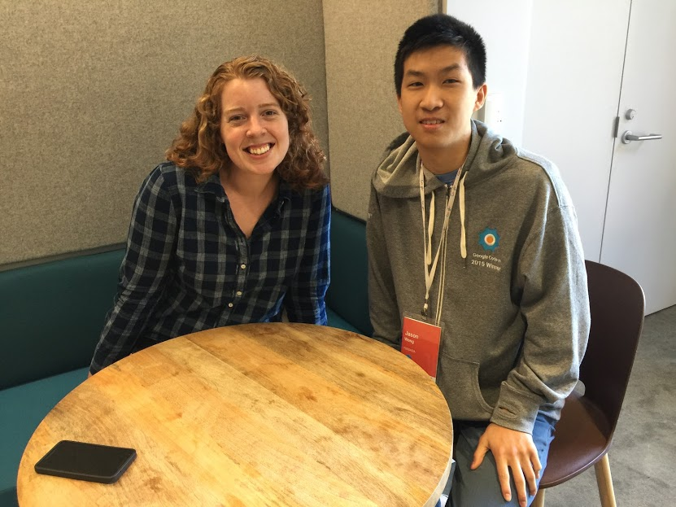
Click here for the link for the shared photo album.
20 Jun 2016 #San Francisco #trip #Mountain View #California #Googleplex #Google